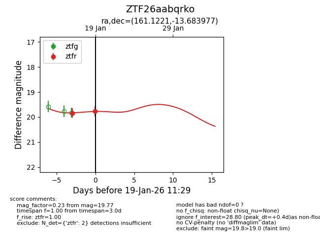
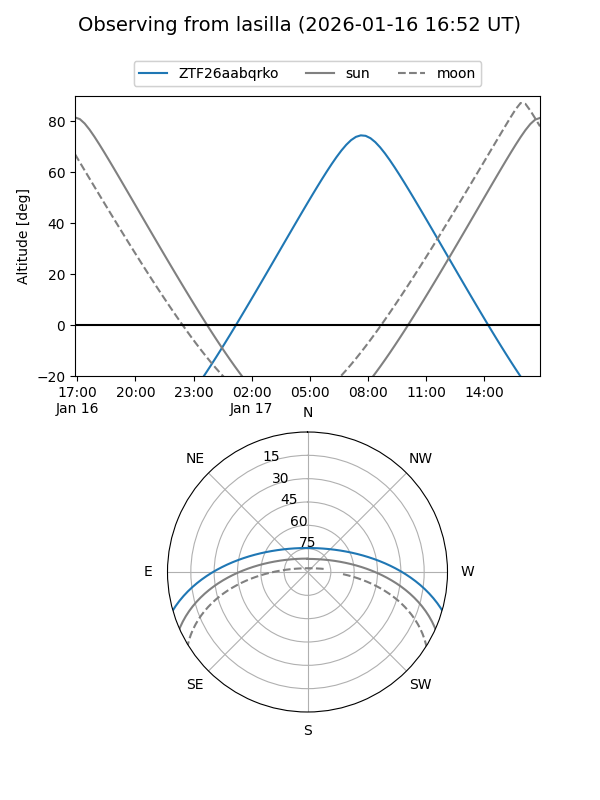
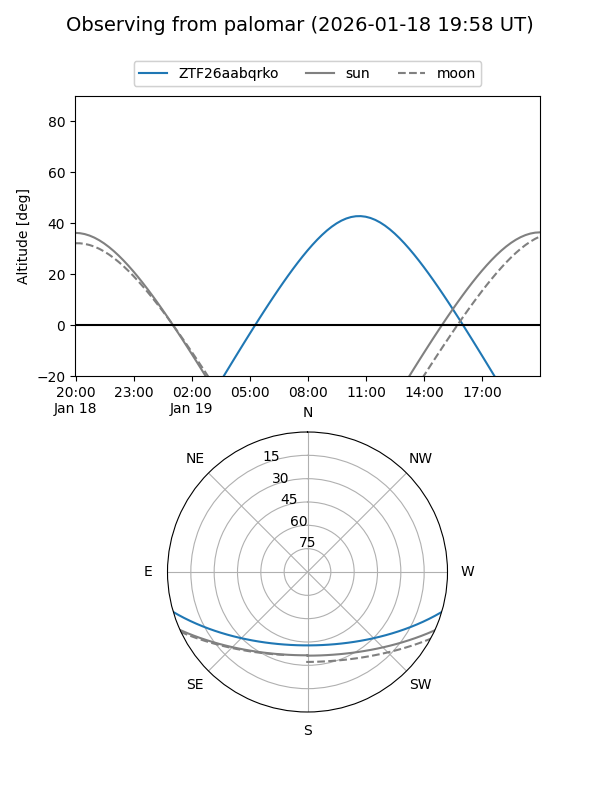
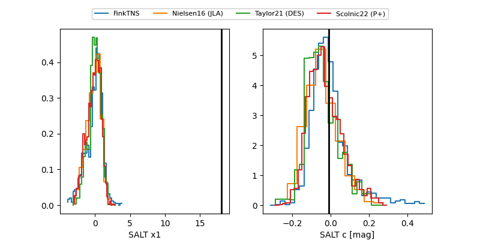

ZTF26aabqrko
Target ZTF26aabqrko at 2026-01-19 11:31
Aliases and brokers:
FINK: link
Lasair: link
ALeRCE: link
alt names
ZTF26aabqrko (ztf,fink_ztf)
Coordinates:
equatorial (ra, dec) = 161.1221,-13.68398
equatorial (HMS+DMS) = 10:44:29.30,-13:41:02.32
galactic (l, b) = (261.9022,+38.86969)
Flags:
Photometry:
last ztfr=19.77
2 ztfr detections
Lightcurve

Visibility


Additional plots
